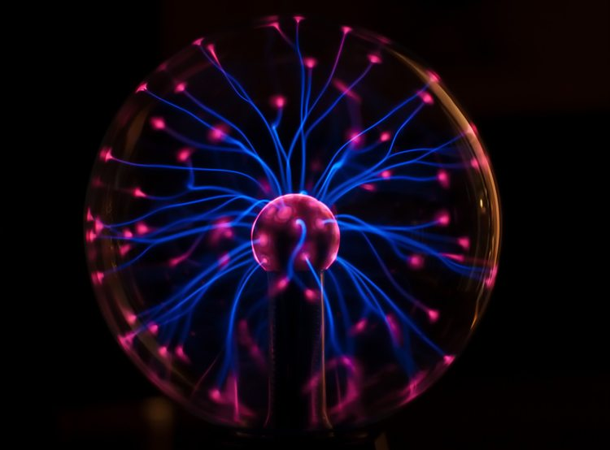
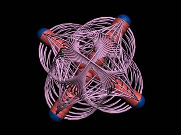
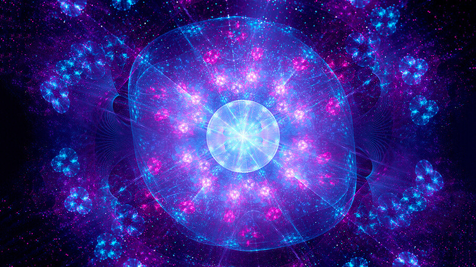

кварки

Протягом декількох останніх століть вчені, які цікавляться будовою Всесвіту, шукали базові будівельні блоки, з яких складається матерія, - найпростіші і неподільні складові матеріального світу. Кварки - це гіпотетичні частинки, з яких, як передбачається, можуть складатися всі відомі елементарні частинки. Що таке кварки, якими вони бувають, і як же вченим вдалося довести існування кварків, якщо їх навіть ніхто не коли не бачив?
лептони

Лептони бувають трьох поколінь, в кожному поколінні два лептона - один заряджений і один нейтральний. Перше покоління: електрон і електронне нейтрино, друге - мюон і мюонне нейтрино, третє - тау-лептон і тау-нейтрино. Лептони дуже схожі один на одного, мюони і тау-лептони (так само як і електрони) можуть утворювати атоми, замінюючи на орбіталях електрони. Головна їхня відмінність - в масі: мюон в 207 разів важче електрона, а тау-лептон в 17 разів важче мюона.
бозони
